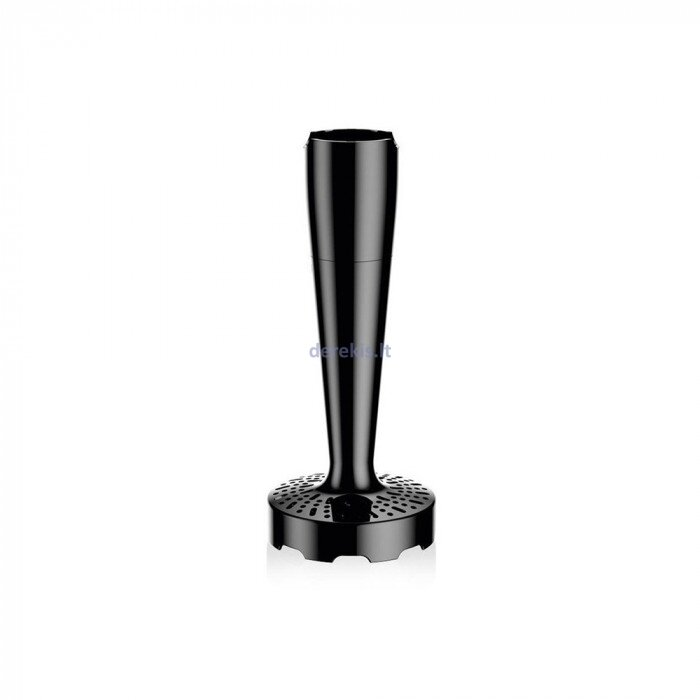

Welcome to Blenderiai
Blenderiai - kainos nuo 3.98 € | Kaina24.lt
2020.10.29 12:20Prisijunkite
Prisijunkite prie sumanių pirkėjų bendruomenės!
Prisijungę galėsite žymėtis norimas prekes.
Arba
Prisijungti su el. paštu Nenaudoji Facebook arba Gmail? Ir neturi Kaina24.lt paskyros? Registruotis su el. paštu
Pamiršai slaptažodį? Priminti slaptažodį
Pasirinkite žemiau
Prekės ženklai
BOSCH 81 BRAUN 49 PHILIPS 47 KITCHENAID 36 TEFAL 29 SENCOR 25 RUSSELL HOBBS 23 KENWOOD 18 SEVERIN 17 ESPERANZA 15 ELECTROLUX 14 CONCEPT 14 SMEG 13 ETA 12 ADLER 12 ZELMER 11 BLAUPUNKT 11 GASTROBACK 11 MPM 11 BAMIX 9 SCARLETT 9 BEPER 8 GORENJE 8 CAMRY 7 DOMO 7 CLATRONIC 7 ECG 7 ARIETE 7 SATURN 7 BEKO 6 JATA 6 CASO 6 MAESTRO 5 FIRST 5 GRUNDIG 5 BLENDTEC 5 PROFI 5 G21 5 NUTRIBULLET 4 WMF 4 STANDART 4 MESKO 4 VITAMIX 4 REDMOND 4 BOMANN 4 TRISTAR 4 PRINCESS 4 G3FERRARI 4 ESGE 4 UNOLD 4 GALLET 3 MORPHY RICHARDS 3 KRUPS 3 AURORA 3 STEBA 3 Daugiau...Kaina
Iki 33.00 € 33.00 - 48.00 € 48.00 - 63.00 € 63.00 - 78.00 € 78.00 - 93.00 € 93.00 - 108.00 € Nuo 108.00 €Pardavėjai
Varle.lt 292 Rde.lt 209 Senukai.lt 200 Bigbox.lt 197 1a.lt 188 Trajektorija.lt 125 Elektromarkt.lt 125 Derekis.lt 123 Topocentras.lt 93 Pigu.lt 73 Avitela.lt 70 Novastar.lt 68 Skytech.lt 61 Ogmina.lt 58 Efix.lv 53 Technorama.lt 50 Kilobaitas.lt 47 Ermitazas.lt 47 Imuperku.lt 44 Buitex.lt 35 Giftforyou.shop 30 Zemakaina.lt 29 Technikossala.lt 27 Euronics.lt 24 Pirk.lt 18 Erbi.lt 15 Philips.lt 13 Fortakas.lt 12 Btn.lt 10 Naminukas.lt 9 Vokiskaideja.lt 9 Zaliavirtuve.lt 8 Imk.lt 5 Kavosdraugas.lt 3 Letaeige-sulciaspaude.lt 1 Daugiau... Populiariausi blenderiai Naujausi blenderiaiApie projektą
Kaina24.lt - internetinės prekybos portalas. Čia rasite informaciją apie daugiau kaip 300 parduotuvių bei 2 000 000 prekių . Ieškokite įvairiausių prekių, vertinkite jas, lyginkite skirtingų pardavėjų kainas, raskite pigiau ir sutaupykite!
Blenderiai
(708) Prekės ženklai, ... Prekių eiliškumas populiariausia viršuje naujausia viršuje pigiausia viršuje brangiausia viršuje pagal abėcėlę pardavėjų kiekį 5Blenderis Philips HR2162
PHILIPS blenderiainuo 42.00 €
Peržiūrėti16 pardavėjų
6Blenderis Philips HR2651
PHILIPS blenderiainuo 55.98 €
Peržiūrėti15 pardavėjų
18Blenderis Philips HR2052/00
PHILIPS blenderiainuo 21.95 €
Peržiūrėti17 pardavėjų
17Blenderis Philips HR2602
PHILIPS blenderiainuo 36.50 €
Peržiūrėti15 pardavėjų
10Blenderis Philips HR2621
PHILIPS blenderiainuo 56.22 €
Peržiūrėti13 pardavėjų
1Blenderis Esperanza EKM 001
ESPERANZA blenderiainuo 6.98 €
Peržiūrėti6 pardavėjai
7Blenderis Philips HR2656
PHILIPS blenderiainuo 63.49 €
Peržiūrėti11 pardavėjų
19Blenderis Caso B3000
CASO blenderiainuo 294.95 €
Peržiūrėti13 pardavėjų
14Blenderis Philips HR 3740/00
PHILIPS blenderiainuo 24.99 €
Peržiūrėti12 pardavėjų
2Blenderis Philips HR1600
PHILIPS blenderiainuo 19.98 €
Peržiūrėti5 pardavėjai
9Blenderis Bosch MSM66150
BOSCH blenderiainuo 39.46 €
Peržiūrėti9 pardavėjai
16Blenderis Severin SM 3734
SEVERIN blenderiainuo 34.00 €
Peržiūrėti10 pardavėjų
3Blenderis Blendtec Designer 625
BLENDTEC blenderiainuo 579.98 €
Peržiūrėti5 pardavėjai
61Blenderis Philips HR2162/90
PHILIPS blenderiainuo 42.00 €
Peržiūrėti13 pardavėjų
11Blenderis Philips HR2105
PHILIPS blenderiainuo 40.99 €
Peržiūrėti8 pardavėjai
15Blenderis Bosch MMR 08A1
BOSCH blenderiainuo 23.70 €
Peržiūrėti8 pardavėjai
35Blenderis Tefal HB659838
TEFAL blenderiainuo 41.89 €
Peržiūrėti9 pardavėjai
20Blenderis Bosch MSM 66120
BOSCH blenderiainuo 36.46 €
Peržiūrėti8 pardavėjai
38Blenderis ESPERANZA EKM028
ESPERANZA blenderiainuo 38.98 €
Peržiūrėti9 pardavėjai
23Blenderis Philips HR2657
PHILIPS blenderiainuo 79.96 €
Peržiūrėti7 pardavėjai
1 2 3 4 5 6 7 PaskutinisSusiję kategorijos
Virduliai Sulčiaspaudės Duonkepės Sumuštinių keptuvės Griliai ir keptuvės Skrudintuvai Plakikliai mikseriai Mėsmalės Vaisių džiovintuvai Vaflinės Kavamalės Garų puodai Virtuvinės svarstyklės Gruzdintuvės Ledų gaminimo aparatai Daugiafunkciniai puodai Pjaustyklės Vakuumatoriai Kiaušinių virimo aparatai Pieno šaldytuvai Cikloninės krosnelės Cukraus vatos aparatai Maisto atliekų smulkintuvaiInformacija
Apie projektą Pirkėjo atmintinė D.U.K. Privatumo politikaPardavėjams
Reklama portale KontaktaiKatalogas
Internetinės parduotuvės Kategorijos Struktūra TOP 5 Русская версия2016 Kaina24.lt - internetinės prekybos portalas. Čia rasite populiariausių Lietuvos parduotuvių - tokių kaip Senukai, Topo centras, Elektromarkt, Avitela, Skytech, Kilobaitas, Fortakas, Technorama, Pigu.lt, Rde.lt, 1a.lt, Varle.lt geriausius kainų pasiūlymus. Pasinaudokite Kaina24.lt portalu, suraskite norimą prekę bei jos pardavėją pigiau ir sutaupykite! Pirkdami internetu, prekes galite įsigyti gyvendami Vilniuje, Kaune, Klaipėdoje, Šiauliuose, Panevėžyje ar bet kurioje kitoje vietovėje.
